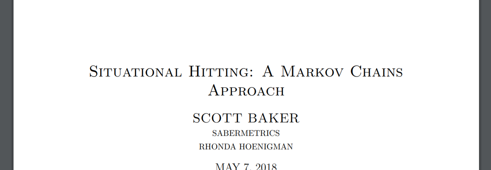
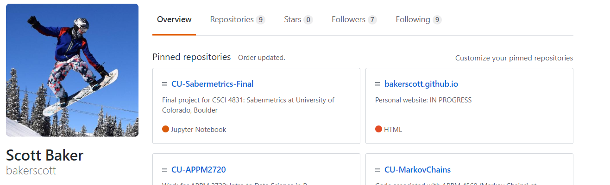
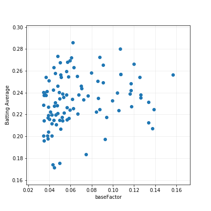

marginal Situational Hitting Score: a new statistic
"This is the future home of Scott Baker's final project for CSCI 4831: Sabermetrics at CU Boulder"
Coming May 7th, 2018
Testing

stuff

stuff

stuff